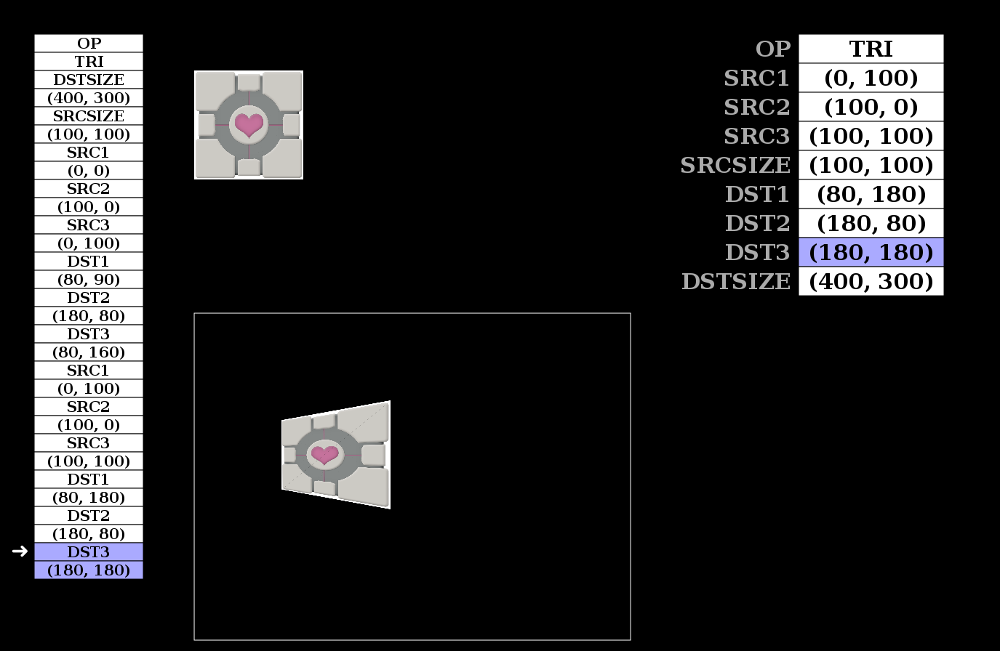

Introduction to GPUs
Context
Tegra's upstream support in pretty good standing:
- Tegra K1 can boot mainline
- Tegra X1 support being upstreamed
- Display implements state-of-the-art APIs (KMS, atomic)
My work: support Tegra GPU acceleration on Nouveau
- Limited to Tegra (but things inevitably spills...)
- Working directly with the Nouveau community
NVIDIA relationship towards Nouveau has significantly evolved
- Some documentation released
- More communication between Nouveau developers and NVIDIA engineers
- NVIDIA now directly contributes to Nouveau
- ... and hopefully more surprises to come
This Talk
GPUs are fascinating devices, yet widely unknown
- How 3D graphics are rendered
- How GPUs accelerate 3D rendering
- How the OSS stack exposes GPUs
Scope
- Real-time polygon rendering
- 3D rendering part of graphics hardware
- NVIDIA hardware and Nouveau driver used as reference
Limits of this Talk
An overview of how 3D graphics are rendered and accelerated
- Basic idea of 3D rendering and GPUs design
- Many details will be omitted
- Simplicity over accuracy
3D Rendering
Identity matrix:
Translation:
Rotation:
Scaling:
Combination:
Omissions
- Local, world, camera coordinates
- Culling
- Clipping
- Tessellation
- Modern lighting techniques
- Perspective correction
- Projection matrix
- Skeletal animation
- Z-buffer
- Stencil buffer
- Texture perspective correction
- Texture filtering
- Transparency
- Shadows
- Bump mapping
- Multi-pass rendering
- …
Simplified 3D Rendering Pipeline
| ↓ | ||||
| Transform | Lighting | Project | ||
|---|---|---|---|---|
| → Matrix & floating point operations | ||||
| ↓ | ||||
| ↓ | ↓ | |||
| Raster | Shade | |||
| → Property interpolation, memory accesses | ||||
Hardware Acceleration of 3D Rendering
Acceleration of Raster Operations
Rectangle fill
Bitmap blit with scaling
Triangle fill
Pushbuffer: list of GPU commands
First generation of 3D accelerators (1996)
Omissions (again...)
- Perspective correction
- Lighting
- Face color
- Transparency
- Antialiasing
- Fog
- Pushbuffer commands simplified
- …
1996: 3dfx Voodoo released

| ↓ | ↓ | |||
| Transform | Lighting | Project |
Geometry Processor
|
|
|---|---|---|---|---|
| CPU | ||||
| ↓ | ||||
| ↓ | ||||
| ↓ | ||||
| Raster | Shade |  | ||
GeForce256: "The world first Graphics Processing Unit" (1999)
Limitations of Second-Generation GPUs
Fixed Pipeline
- Lighting limited to a few models
- Fragment shading limited to color + light + texture + ...
- More complex shading needs to be delegated to the CPU!
Accelerators that perform two very different things
- Fast, parallel floating-point operations
- Fast rasterization
Extreme workloads result in sub-optimal silicon usage
Programmable Pipeline (2001)
Both vertex and pixel processing units become capable of running a user-defined program (shader)
on each vertex and each pixel
| ↓ | |||
|
Vertex Shader
gl_Position = projMatrix * transMatrix * vec4(vertex, 1.0); gl_Position = projMatrix * transMatrix * vec4(vertex, 1.0); lighting = max(dot(faceNormal, lightDirection), 0.0); |
|||
| ↓ | |||
|
|
→ |
|
|
| ↓ | |||
|
Fragment Shader
gl_FragColor = vec4(0.5, 0.5, 1.0, 1.0); texColor = texture2D(sampler, vec2(tex.s, tex.t)); gl_FragColor = vec4(texColor.rgb * lighting, 1,0); |
|||
| ↓ | |||
Programmable Pipeline
Omissions
- Geometry shaders
- Tesselation shaders
- Shader examples very simplified
- …
Limitations of Second-Generation GPUs
Fixed Pipeline
Lighting limited to a few modelsFragment shading limited to color + light + texture + ...More complex shading needs to be delegated to the CPU!
Accelerators that perform two very different things
- Fast, parallel floating-point operations
- Fast rasterization
Extreme workloads result in sub-optimal silicon usage
Issue with extreme loads
|
Vertex Shaders
| |
| Fragment Shaders |
Unified Shaders (2006)
- Units responsible for vertex and fragment shading merged
- Better use of silicon during extreme workloads
- The 3D pipeline becomes a logical pipeline
- GPU becomes General-Purpose: CUDA, OpenCL

Geforce GTX 980: 2048 CUDA cores
Software Side
libdrm app example
Use the 2D class to render a green rectangle on the framebuffer from (100, 100) to (150, 150)Open device
fd = open("/dev/dri/renderD128", O_RDWR | O_CLOEXEC);
nouveau_device_wrap(fd, 0, &device);
nouveau_client_new(device, &client);
Allocate framebuffer
nouveau_bo_new(device, NOUVEAU_BO_VRAM, 4096,
width * 4 * height, NULL, &fb);
Allocate channel & pushbuffer
nouveau_object_new(&device->object, 0, NOUVEAU_FIFO_CHANNEL_CLASS,
&data, size, &channel);
nouveau_pushbuf_new(client, channel, 2, 4096, true, &pushbuf);
Allocate 2D object
nouveau_object_new(channel, 0xbeef902d, NVC0_2D_CLASS, NULL, 0, &twod);
Set object
BEGIN_INCR(pushbuf, 1, SET_OBJECT);
DATA(pushbuf, twod->oclass);
Set destination properties
BEGIN_INCR(pushbuf, 5, DST_PITCH);
DATA(pushbuf, 4 * width); /* DST_PITCH */
DATA(pushbuf, width); /* DST_WIDTH */
DATA(pushbuf, height); /* DST_HEIGHT */
DATA(pushbuf, fb->offset >> 32); /* DST_OFFSETUPPER */
DATA(pushbuf, (uint32_t)fb->offset); /* DST_OFFSETLOWER */
Set operation & color
BEGIN_INCR(pushbuf, 3, RENDER_SOLID_PRIM_MODE);
DATA(pushbuf, 0x4); /* Rectangle */
DATA(pushbuf, 0xd5); /* COLOR_FORMAT (A8B8G8R8) */
DATA(pushbuf, 0x0000ff00); /* COLOR */
Set draw coordinates
BEGIN_NONINCR(pushbuf, 2, RENDER_SOLID_PRIM_POINTXY);
DATA(pushbuf, 100 | (100 << 16)); /* x | (y << 16) */
DATA(pushbuf, 150 | (150 << 16)); /* x | (y << 16) */
Kick the pushbuffer
nouveau_pushbuf_kick(pushbuf, pushbuf->channel);
Result:
Omissions
- List of buffers used by graphics job
- Synchronization
- 3D workloads involve more buffers (compiled shaders, ...) and more complex pushbuffers
More complex libraries like OpenGL build on this simple interface
- Complete API implementation
- State tracking
- Shaders compilers
- …
Conclusion
- GPUs have evolved...
- from a very specialized device
- to a general-purpose computer that fills a void in the CPU offering
- GPUs are fascinating, and the open-source graphics stack needs your help!
Resources
- History and Evolution of GPUs
- http://www.techspot.com/article/650-history-of-the-gpu/
- The History of Visual Magic in Computers (Jon Peddie)
- A Trip Through the Graphics Pipeline
- https://fgiesen.wordpress.com/2011/07/09/a-trip-through-the-graphics-pipeline-2011-index/
- Life of a Triangle
- https://developer.nvidia.com/content/life-triangle-nvidias-logical-pipeline
- The Nouveau Project
- http://nouveau.freedesktop.org/